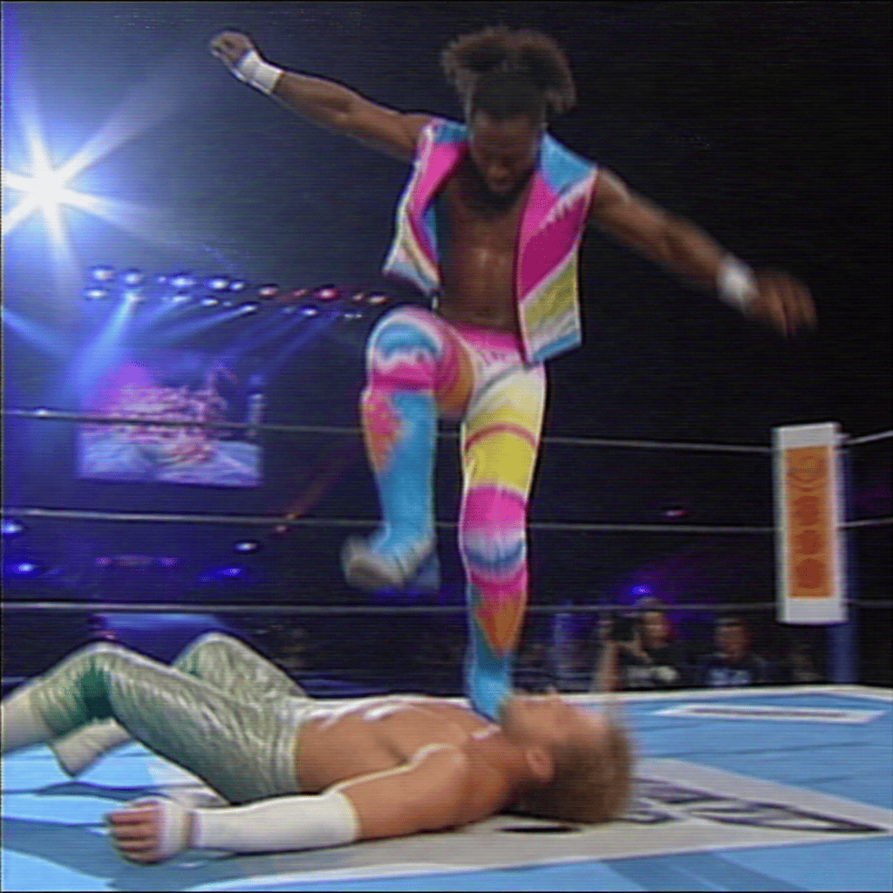

2026/10/10(土)
アベマ・試合結果速報！
○永田裕志 (12分34秒 エクスプロイダー) ジュリアス・クリード●
○ソロ・シコア (20分15秒 スピア) グレイソン・ウォーラー●
○ナタリア (17分45秒 シャープシューター) ベイリー●
○ブルータス・クリード (14分56秒 フィッシャーマンズ・スープレックス) アンクル・ハウディー●
○エグゼビア・ウッズ (22分10秒 ストンプ) ウィル・オスプレイ●
○DOUKI (10分30秒 DDT) ピート・ダン●
○ダミアン・プリースト (25分0秒 ショットガンラリアット) アポロ・クルーズ●
○ジェイコブ・ファトゥ (19分12秒 スペルバインダー) ブロン・ブレイカー●
○EVIL (15分27秒 EVIL) レイ・フェニックス●
○NARAKU (8分29秒 フランケンシュタイナー) オーティス●
○永田裕志 (10分50秒 ストレッチプラム) レイ・フェニックス●
○Mr.Iguana (18分3秒 スワントーンボム) ブルータス・クリード●
○中邑真輔 (16分45秒 ケンドー参上) タイラー・ベイト●
○マスター・ワト (21分5秒 ラストシャドウ) カーメロ・ヘイズ●
○AJスタイルズ (13分22秒 スタイルズクラッシュ) Pagano●
Thank you for Watching !

「○エグゼビア・ウッズ (22分10秒 ストンプ) ウィル・オスプレイ● 」